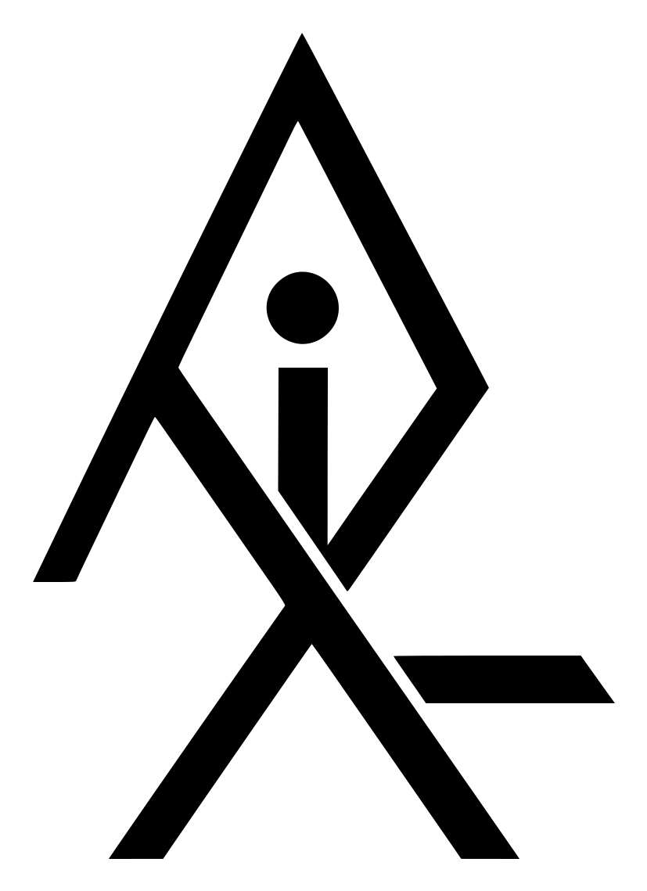
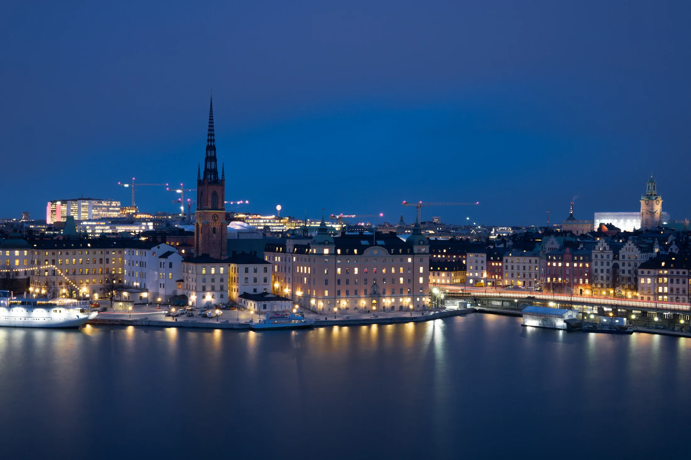
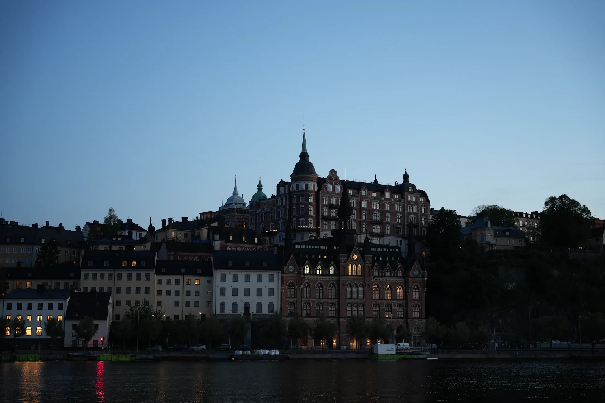

01
Design
Typografi, färg och bild i ett system som håller över tid. Varje sida ritas för just er verksamhet, inte från en mall.


kontakt@alunix.se
Vi skapar skräddarsydda webbplatser som hjälper er att exponera verksamheten.
Webbdesign, design och system. Allt på ett ställe.
Typografi, färg och bild i ett system som håller över tid. Varje sida ritas för just er verksamhet, inte från en mall.
Handskriven kod, snabb laddning och rörelse som bär innehållet. Byggt för att fungera på varje skärm och hålla i många år.
Bokning, betalning och kunddatabas när verksamheten kräver det. CMS så att ni själva ändrar text och bild.

Skriv till oss
kontakt@alunix.seAlunix, webbyrå i Sverige. Vi svarar på svenska och berättar vad er sida skulle kosta.